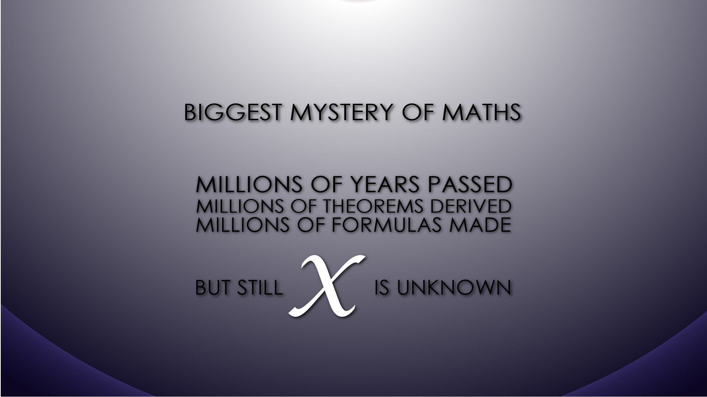

Syllabus For Mathematics
There are 11 chapters in GATE Syllabus for Mathematics paper.
Each chapter has many subtopics. The complete syllabus of Mathematics paper is given below.

Chapter 1 – Linear Algebra
Finite dimensional vector spaces;
Linear transformations and their matrix representations, rank;
systems of linear equations, eigenvalues and eigenvectors, minimal polynomial, Cayley-Hamilton Theorem,
diagonalization, Jordan-canonical form, Hermitian, Skew-Hermitian and unitary matrices;
Finite dimensional inner product spaces, Gram-Schmidt orthonormalization process, self-adjoint operators, definite forms.
Chapter 2 – Complex Analysis
Analytic functions, conformal mappings, bilinear transformations;
complex integration: Cauchy’s integral theorem and formula;
Liouville’s theorem, maximum modulus principle; Zeros and singularities;
Taylor and Laurent’s series; residue theorem and applications for evaluating real integrals.
Chapter 3 – Real Analysis
Sequences and series of functions, uniform convergence, power series, Fourier series, functions of several variables, maxima, minima;
Riemann integration, multiple integrals, line, surface and volume integrals, theorems of Green, Stokes and Gauss;
metric spaces, compactness, completeness, Weierstrass approximation theorem;
Lebesgue measure, measurable functions; Lebesgue integral, Fatou’s lemma, dominated convergence theorem.
Chapter 4 – Ordinary Differential Equations
First order ordinary differential equations,
existence and uniqueness theorems for initial value problems,
systems of linear first order ordinary differential equations,
linear ordinary differential equations of higher order with constant coefficients;
linear second order ordinary differential equations with variable coefficients;
method of Laplace transforms for solving ordinary differential equations,
series solutions (power series, Frobenius method); Legendre and Bessel functions and their orthogonal properties.
Chapter 5 – Algebra
Groups, subgroups, normal subgroups,
quotient groups and homomorphism theorems, automorphisms;
cyclic groups and permutation groups, Sylow’s theorems and their applications;
Rings, ideals, prime and maximal ideals, quotient rings, unique factorization domains,
Principle ideal domains, Euclidean domains, polynomial rings and irreducibility criteria;
Fields, finite fields, field extensions.
Chapter 6 – Functional Analysis
Normed linear spaces, Banach spaces, Hahn-Banach extension theorem,
open mapping and closed graph theorems, principle of uniform boundedness;
Inner-product spaces, Hilbert spaces, orthonormal bases, Riesz representation theorem, bounded linear operators.
Chapter 7 – Numerical Analysis
Numerical solution of algebraic and transcendental equations: bisection,
secant method, Newton-Raphson method, fixed point iteration;
interpolation: error of polynomial interpolation, Lagrange, Newton interpolations;
numerical differentiation; numerical integration: Trapezoidal and Simpson rules;
numerical solution of systems of linear equations: direct methods (Gauss elimination, LU decomposition);
iterative methods (Jacobi and Gauss-Seidel);
numerical solution of ordinary differential equations: initial value problems: Euler’s method, Runge-Kutta methods of order 2.
Chapter 8 – Partial Differential Equations
Linear and quasilinear first order partial differential equations, method of characteristics;
second order linear equations in two variables and their classification;
Cauchy, Dirichlet and Neumann problems;
solutions of Laplace, wave in two dimensional Cartesian coordinates,
Interior and exterior Dirichlet problems in polar coordinates;
Separation of variables method for solving wave and diffusion equations in one space variable;
Fourier series and Fourier transform and Laplace transform methods of solutions for the above equations.
Chapter 9 – Topology
Basic concepts of topology, bases, subbases, subspace topology, order topology,
product topology, connectedness, compactness, countability and separation axioms, Urysohn’s Lemma.
Chapter 10 – Probability And Statistics
Probability space, conditional probability, Bayes theorem, independence,
Random variables, joint and conditional distributions,
standard probability distributions and their properties (Discrete uniform, Binomial, Poisson, Geometric,
Negative binomial, Normal, Exponential, Gamma, Continuous uniform, Bivariate normal, Multinomial), expectation,
conditional expectation, moments; Weak and strong law of large numbers, central limit theorem;
Sampling distributions, UMVU estimators, maximum likelihood estimators; Interval estimation;
Testing of hypotheses, standard parametric tests based on normal, distributions; Simple linear regression.
Chapter 11 – Linear Programming
Linear programming problem and its formulation, convex sets and their properties,
graphical method, basic feasible solution, simplex method, big-M and two phase methods;
infeasible and unbounded LPP’s, alternate optima;
Dual problem and duality theorems, dual simplex method and its application in post optimality analysis;
Balanced and unbalanced transportation problems, Vogel’s approximation method for solving transportation problems;
Hungarian method for solving assignment problems